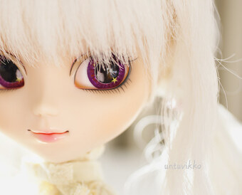

Популярные статьи


Активность на сайте
Это проект для пользователей 8 лет и старше.
Новые стихи публиковали участники сайта.
Тексты песен подбираются в образовательных целях. Какого качества песни мы изучаем.
О проекте. Мы выбираем международный мультикультурный статус.
Условия использования материалов устанавливают участники самостоятельно, обозначив на странице профиля информацию об авторских правах.
Сообщить о проблеме можно через страницу vsela@Mastodon.social.
Контактировать владельцев проекта можно только через YouTube Лето.
Благодарим за творчество представленных на сайте авторов и исполнителей.
Фото: Untuvikko Flickr